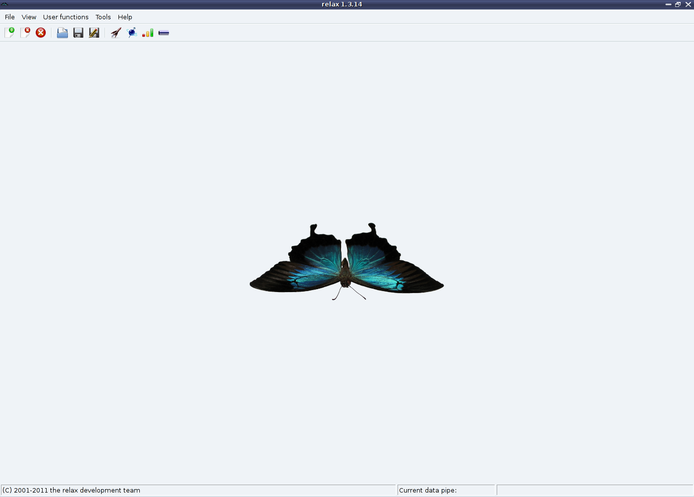

Next: The data pipe Up: How to use relax Previous: The help system Contents Index
Tab completion is implemented to prevent insanity as the function names can be quite long - a deliberate feature to improve usability. The behaviour of the tab completion is very similar to that of the bash prompt.
Not only is tab completion useful for preventing RSI but it can also be used for listing all available functions. To begin with if you hit the [TAB] key without typing any text all available functions will be listed (along with function classes and other python objects). This extends to the exploration of user functions within a function class. For example to list the user functions within the function class model_free type
[numbers=none] relax> model_free.
The dot character at the end is essential. After hitting the [TAB] key you should see something like
[numbers=none] relax| model_free. model_free.__class__ model_free.__doc__ model_free.__init__ model_free.__module__ model_free.__relax__ model_free.__relax_help__ model_free.create_model model_free.delete model_free.remove_tm model_free.select_model relax> model_free.
All the objects beginning with an underscore are ``hidden'', they contain information about the function class and should be ignored. From the listing the user functions copy, create_model, delete, remove_tm, and select_model contained within model_free are all visible.
|
 |
The relax user manual (PDF), created 2014-01-13.